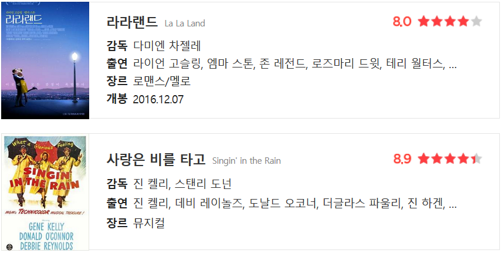

‘오마주(Hommage)’는 존경, 존중을 뜻하는 프랑스어다. 영화 등 대중문화에서는 자신이 영향을 받은 작품의 중요한 요소나 표현을 인용해 존경심을 드러내는 방식으로 통한다. 원작자를 존중하는 차원에서 재창작된다는 점에서 원작을 비트는 ‘패러디(Parody)’와는 약간 다른 의미가 될 수 있다. 이런 오마주를 발견하면서 보는 것도 영화 감상의 새로운 재미다. 다른 영화에 대한 유명한 오마주가 포함된 영화들을 찾아봤다.
<라라랜드>는 여러 고전 뮤지컬에 대한 애정과 헌사를 아낌없이 담고 있는 영화다. 그중에서도 세바스찬(라이언 고슬링)이 길을 걷다가 미아(엠마 스톤) 앞에서 가로등을 잡고 도는 장면은 너무나 익숙하다. <사랑은 비를 타고>에서 진 켈리가 우산을 돌리며 빗속에서 ‘Sing In The Rain’을 부르는 그 유명한 장면의 오마주다.
